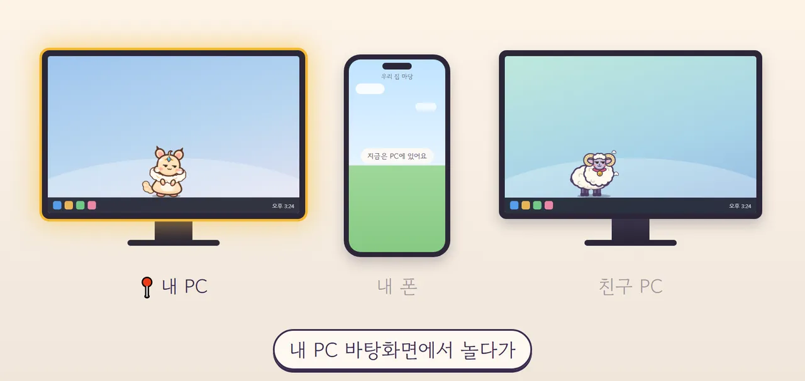
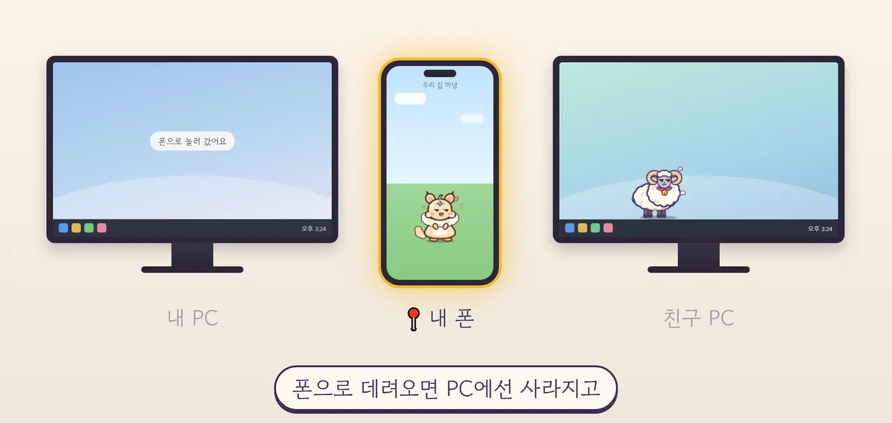
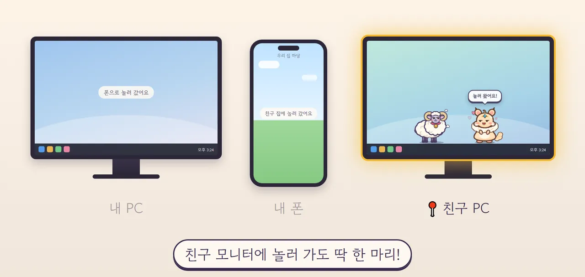
펫은 언제나 딱 한 곳에만 살아요
일하는 동안 작업표시줄 위를 걷고, 창 위에서 쉬어요. 배고프면 밥을 달라고 말을 걸어요.
복사본은 없어요. 폰으로 데려가면 PC 화면에서는 사라지고, 친구 집에 놀러 가면 그동안 내 화면은 조용해요.
알이 깨지는 순간, 두근두근
실제 폰 뽑기 화면이에요. 좋은 알일수록 연출이 길고 화려해져요.
- 흔들알을 누르면 흔들흔들, 빛이 새어 나와요
- 이야기신화 알은 하늘이 갈라지는 이야기를 한 줄씩 들려줘요
- 쩍!알이 깨지면 새 친구가 짠! 신화 황룡이 나왔어요
확률은 뽑기 화면의 [?] 에서 언제든 볼 수 있어요.
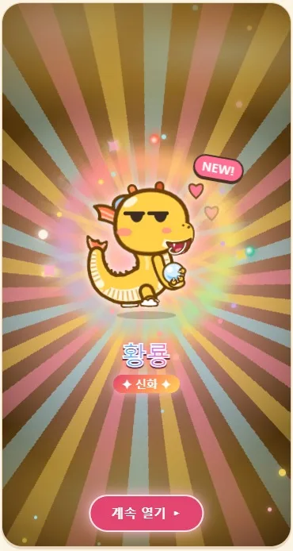
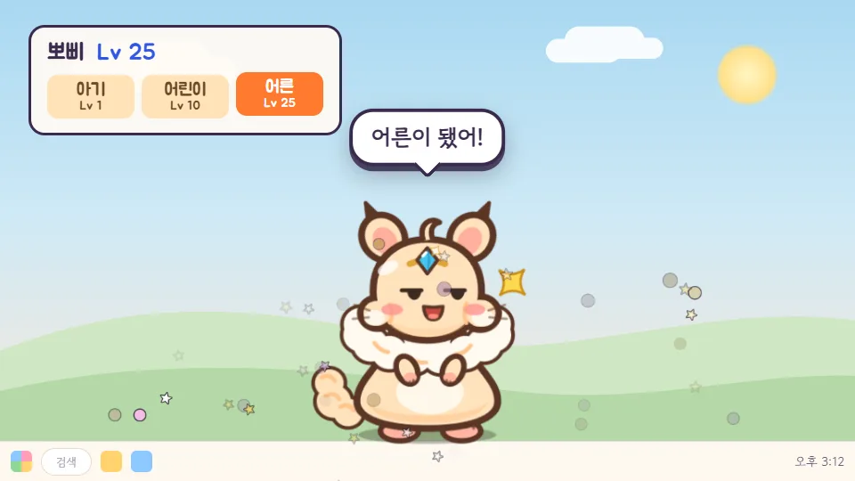
레벨이 오르면 쑥쑥 자라요
돌보고 함께 싸우다 보면 레벨이 올라요. 때가 되면 빛에 싸여 진화하고, 몸도 힘도 한 뼘씩 커져요.
- 아기Lv 1 · 알에서 막 나온 작고 동글한 모습
- 어린이Lv 10 · 쑥 자라서 장난도 많아져요
- 어른Lv 25 · 의젓한 모습, 전투 힘도 가장 세요
펫과 지내는 하루
할 일을 챙기고, 바쁠 땐 작게 줄이거나 잠깐 숨겨요. 폰에서는 마당과 모험이 기다려요.
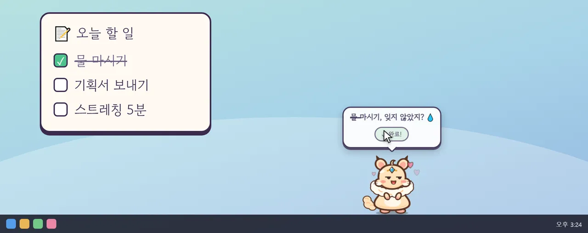
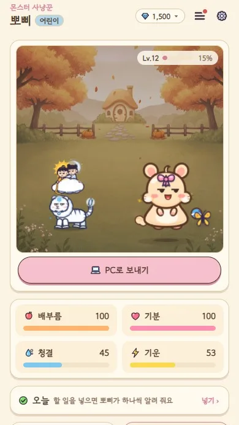
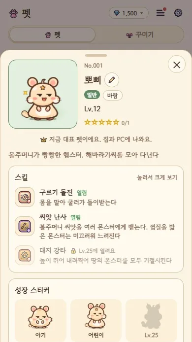
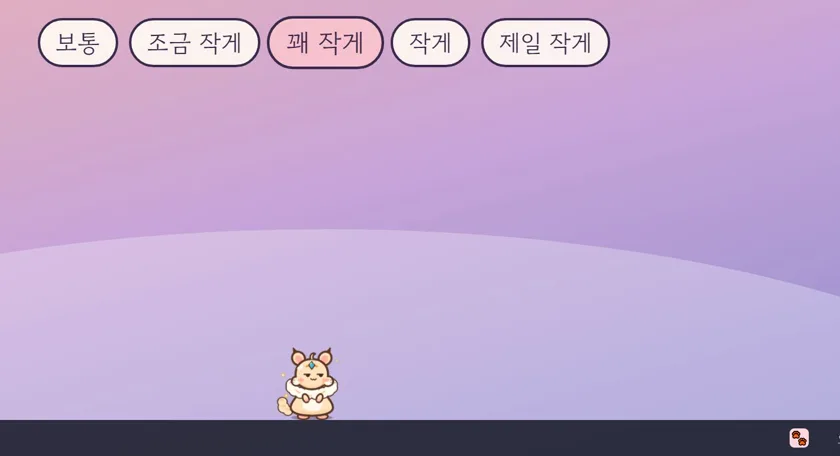
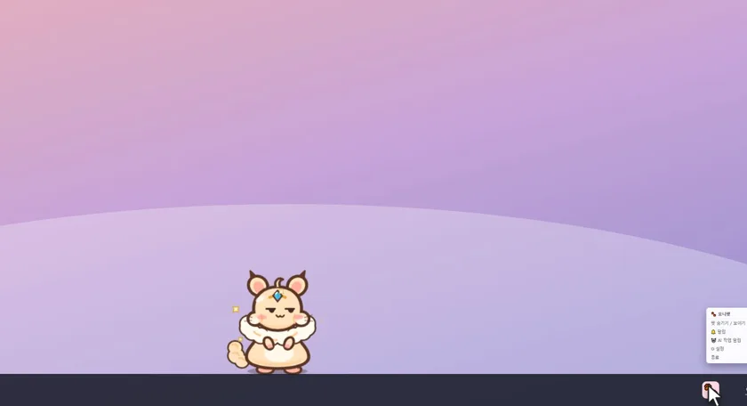
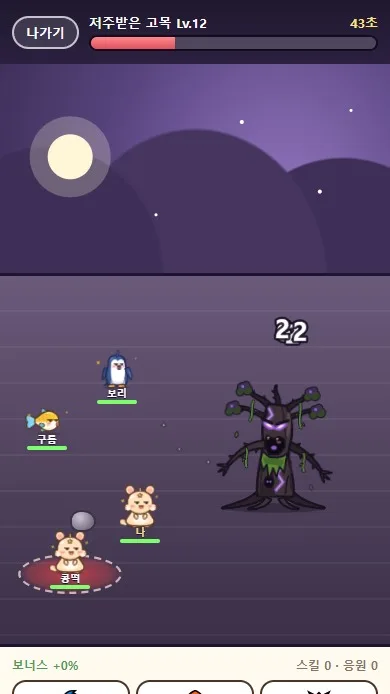
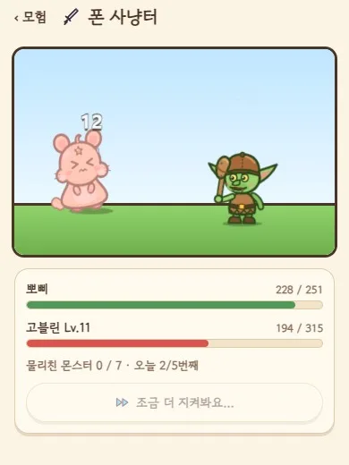
그 밖에도
- 왕관 · 리본 · 꼬마 친구로 꾸미기
- 펫 수첩과 앨범에 모으는 이야기
- 화면을 깨고 나온 몬스터와 사냥터
- 펫이 날마다 보내는 소원 편지
- 친구 PC 에 놀러 가기
- 집중할 땐 방해 금지
시작은 몇 분이면 돼요
폰에서는 이렇게 지내요
Google Play 에 올린 화면 그대로예요. 집 마당부터 사냥터 · 친구 보스 · 모험까지, PC 와 같은 메뉴를 폰에서도 써요.
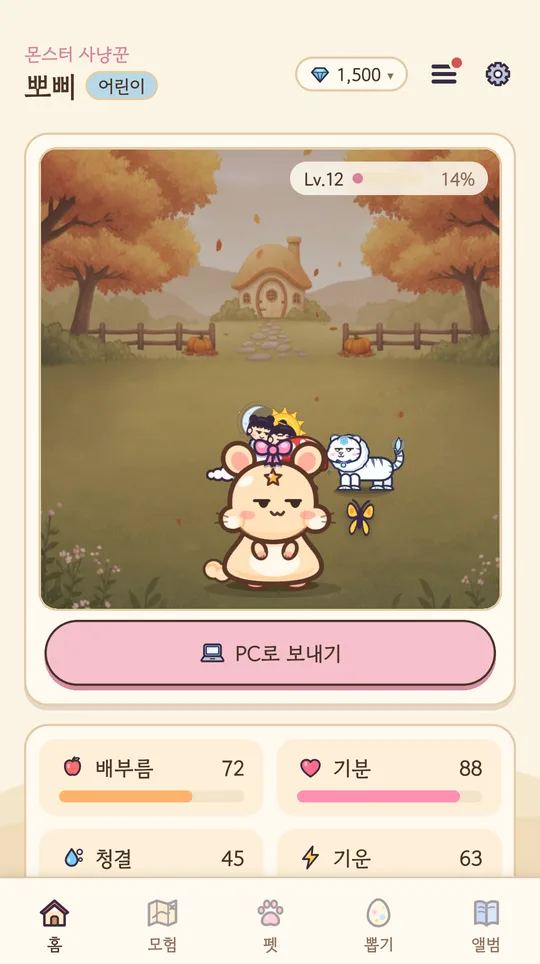
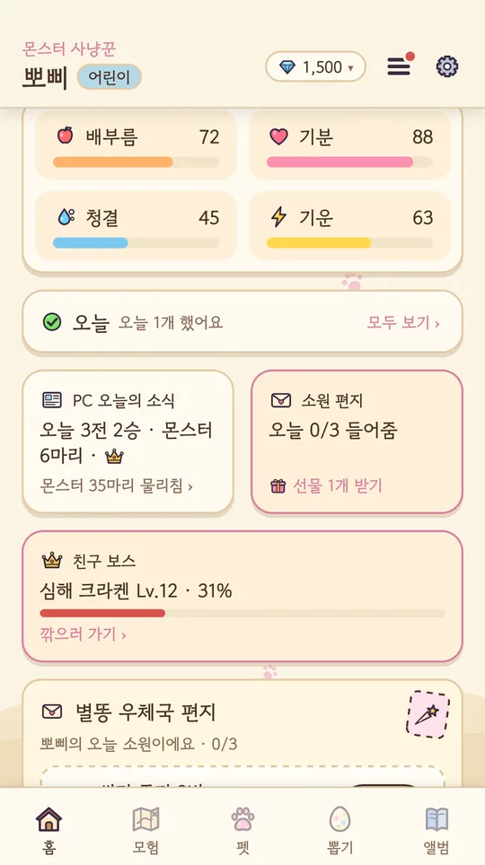
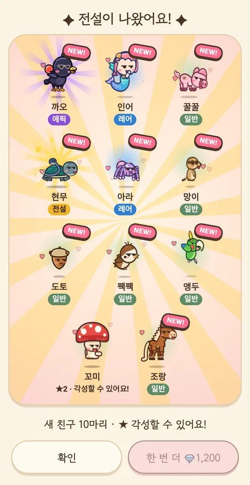
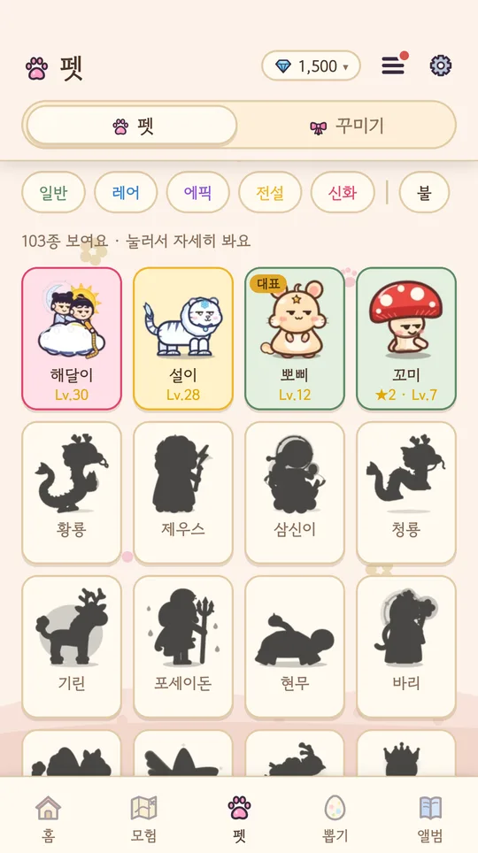
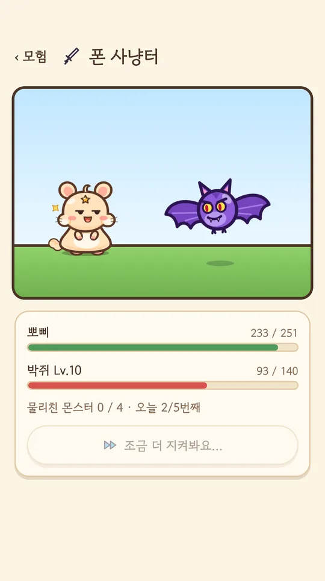
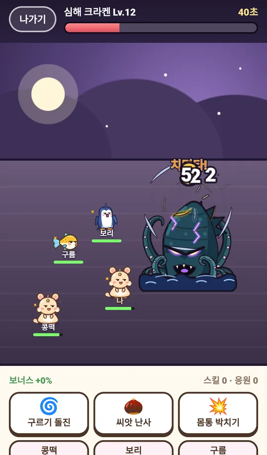
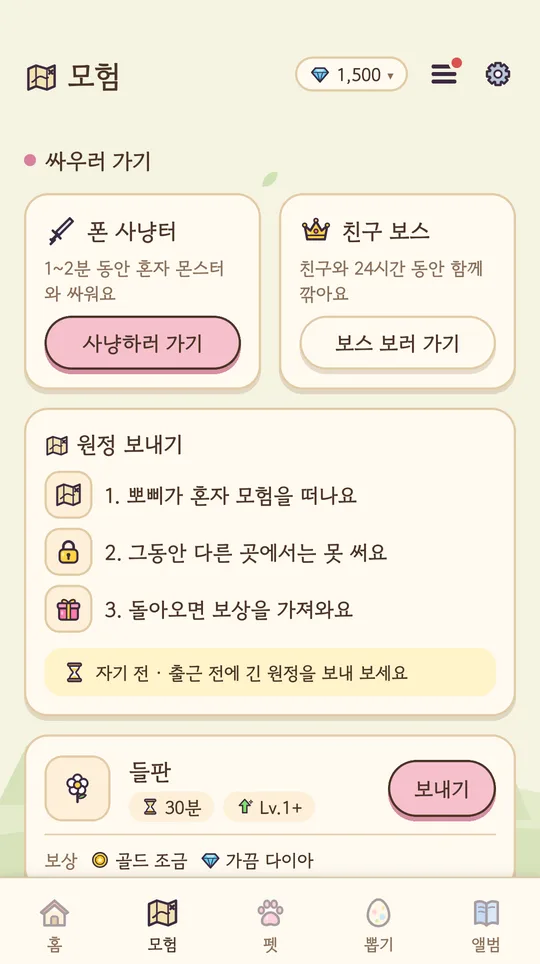
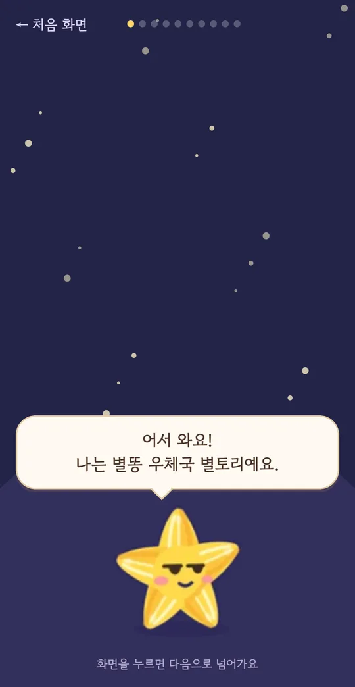
펫 한 마리, 들여 볼까요?
PC (Windows · Mac)
- Windows 10 · 11 (64비트)
- Mac (macOS 11 이상, Apple 칩 · Intel)
- 무료 · 로그인 필요
Windows 10 · 11 · 무료
Windows: 파란 경고 창이 뜨면 [추가 정보] → [실행]. 자세한 건 PC 설치 안내.
Mac: Monipet 을 응용 프로그램 폴더로 끌어 넣은 뒤 열어요. "열 수 없어요" 창이 뜨면 시스템 설정 › 개인정보 보호 및 보안 › [그래도 열기]. 창 위 걷기 · 전체화면 감지는 아직 Windows 에서만 돼요.
Android 폰
- Google Play
- 무료 · 로그인 필요
곧 Google Play 에 나와요. 출시되면 이 단추로 받을 수 있어요.
Microsoft Store (준비 중)아이폰은 아직 지원하지 않아요. 모니펫은 만 14세 이상만 이용할 수 있어요.
자주 묻는 질문
정말 무료인가요?
네, 내려받기와 플레이는 무료예요. 원할 때만 보는 보상 광고가 있어요.
몇 살부터 할 수 있나요?
모니펫은 만 14세 이상만 이용할 수 있어요. 처음 시작할 때 확인해요.
일할 때 방해되지 않나요?
펫 크기를 다섯 단계로 줄일 수 있고, 회의 중엔 트레이에서 한 번에 숨길 수 있어요. 방해 금지를 켜면 몬스터도 쉬어요.
PC만, 또는 폰만 있어도 되나요?
네, 하나만 있어도 즐길 수 있어요. 둘 다 같은 계정으로 로그인하면 펫을 PC와 폰 사이로 데려갈 수 있어요. 펫은 언제나 한 곳에만 있어요.
설치할 때 파란 경고 창이 떠요.
새로 나온 프로그램이라 Windows가 한 번 더 묻는 거예요. [추가 정보] → [실행]을 누르면 돼요. 자세한 건 PC 설치 안내를 봐 주세요.
Mac이나 아이폰에서도 되나요?
Mac은 돼요 (macOS 11 이상). 아이폰은 준비하고 있어요. 지금은 Windows · Mac PC와 Android 폰을 지원해요.